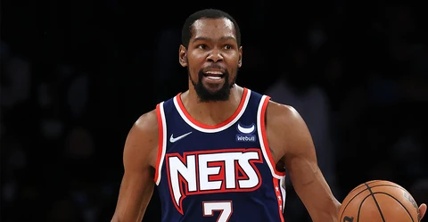

“三千先生”正式加冕 数读库里传奇之路
从2009年到2021年，斯蒂芬-库里仅用794场比赛，就将三分球正式带入到“3000时代”，让我们一同跟随一个个经典的数字，回顾库里的传奇之路。
54
麦迪逊一战成名
在令人疯狂的2015-16赛季，科尔赛季初因手术无法现场执教给了卢克-沃顿执掌教鞭的机会，最终在他给库里赋予无限开火权的情况下后者火力全开。最终，库里在常规赛还剩最后一场收官战的情况下，已经飚中了392记三分。就在人们怀疑他能否创造单赛季400+三分的神迹时，库里风轻云淡般在首节便飚中了6记三分，最终将新的历史三分纪录定格在402记。值得一提的是，这一数字已经超越此前纪录（当然同样是由斯蒂芬-库里创造的）多达116个。
402
单赛季三分命中数
众所周知，勇士在2009年的选秀大会上，用首轮第七顺位提前摘走库里成功截胡尼克斯，这也成为了纽约球迷心中永远的痛。2013年2月27日，金州勇士客场挑战纽约尼克斯。库里在篮球圣地麦迪逊花园广场狂砍54分5个篮板7次助攻，不仅创下了个人职业生涯得分新高，除此之外，11记三分球也创下了个人生涯单场投中三分球的新高。经此一役的洗礼，斯蒂芬-库里一战成名，走上了自己的封神之路。
11+1
追平当时三分纪录+超远三分绝杀雷霆
2016年2月27日，金州勇士客场挑战俄克拉荷马雷霆，在当年西决大战七场的两支球队，其实早在常规赛就已经充满恩怨，其中故事性最强的当属这一场比赛。斯蒂芬-库里在加时赛最后关头，运球刚过半场的情况下就果断出手三分，一举完成准绝杀将雷霆斩落马下。这记令人瞠目结舌的三分不仅让库里追平了当时12记三分的历史纪录，同时这一幕也成为了永载NBA史册的经典瞬间。
13
生涯单场三分数
2016年2月27日，金州勇士客场挑战俄克拉荷马雷霆，在当年西决大战七场的两支球队，其实早在常规赛就已经充满恩怨，其中故事性最强的当属这一场比赛。斯蒂芬-库里在加时赛最后关头，运球刚过半场的情况下就果断出手三分，一举完成准绝杀将雷霆斩落马下。这记令人瞠目结舌的三分不仅让库里追平了当时12记三分的历史纪录，同时这一幕也成为了永载NBA史册的经典瞬间。
22
生涯10+以上三分次数
放眼NBA75年的历史长河中，也仅仅出现过67次单场命中10+记三分的情况，而库里一人便独占其中三成的次数——22次。更加细思极恐的一点是，其他至少完成两次10+三分的球员——汤普森、哈登、利拉德、拉文、JR-史密斯的次数相加，也才只有16次。
131 / 131
全票MVP
2015-16赛季的库里以及勇士有着太多纪录加持，同样将悬念保留到常规赛最后一刻的，还有历史最佳常规赛战绩，在收官战战胜灰熊之后，勇士将由芝加哥公牛保持了72胜10负的历史最佳战绩提升到了73胜9负——历史上首个常规赛个位数负场。凭借着毋庸置疑的个人表现和团队战绩，在赛季末的常规赛MVP投票当中，斯蒂芬-库里收获全部131张第一选票，连续第二个赛季加冕MVP殊荣，同时也是历史上首个全票MVP。
62
单场得分纪录
2021年1月3日，金州勇士主场迎战波特兰开拓者，在与另一位联盟顶级三分射手达米安-利拉德的较量中，库里用生涯新高62分的疯狂表现完全占据上风。
470
季后赛三分数
如果算上季后赛命中的三分数，库里早已登顶历史三分榜首位。尽管已经连续两个赛季无缘季后赛，但他仍然牢牢把控着季后赛三分命中数的头名，而达到这一数字仅用了112场季后赛。作为对比，以385记排名第三的雷-阿伦则用了171场。
1000
生涯第1000记三分
2015年1月8日，在勇士主场迎战步行者的比赛中，格林助攻库里命中了生涯第1000记三分。值得一题的是，此时的库里还没有得到对手疯狂的照顾，仅仅通过一个掩护便得到了轻松出手的机会。
54
麦迪逊一战成名
众所周知，勇士在2009年的选秀大会上，用首轮第七顺位提前摘走库里成功截胡尼克斯，这也成为了纽约球迷心中永远的痛。2013年2月27日，金州勇士客场挑战纽约尼克斯。库里在篮球圣地麦迪逊花园广场狂砍54分5个篮板7次助攻，不仅创下了个人职业生涯得分新高，除此之外，11记三分球也创下了个人生涯单场投中三分球的新高。经此一役的洗礼，斯蒂芬-库里一战成名，走上了自己的封神之路。
2000
生涯第2000记三分
2017年12月4日，勇士迎战鹈鹕，伊戈达拉快攻之中找到左侧45度的库里，助攻他命中了生涯第2000记三分。与上一个千记三分的里程碑相比，此时的库里已经两夺NBA总冠军，两度当选常规赛MVP。
2974
历史三分新纪录
聚集着整个篮球世界的瞩目，库里并没有让人们的等待持续太久。哪怕全世界都清楚这一时刻终将到来，但就在皮球真正落入网兜的那一刻，王冠终于戴到了斯蒂芬-库里的头上。从2013年的一战成名，到2021年最终加冕，还是在麦迪逊花园广场，库里的传奇仍在书写。
3000
开创三分纪录“3.0时代”
当雷-阿伦命中2973记三分，用了足足18个赛季、1300比赛的时候，人们都认为再难有人触及到这位传奇射手的高度，更不用说将其提升到3000个这一望尘莫及的水平。然而在库里2015-16赛季飙进402记三分之后，人们开始相信他就是有能力改写纪录的那个“救世主”。而从0到3000，这个身穿30号的传奇只用了794场。
157
连续命中三分场次
斯蒂芬-库里可以称得上是带动三分这项武器常规化的最主要引领者。从2014年11月13日至2016年11月3日跨越三个赛季的时间里，库里创下了连续157场比赛至少命中1记三分的纪录。而NBA历史上除去库里之外，唯一一个连续场次也超过百场的，是凯尔-科沃尔的127次。而今天，库里再一次达到了这一高度，在下一场与掘金的2021年收官战里，斯蒂芬-库里有机会将这一数字带到历史新的高度之上。
1
历史上最伟大的投手，今晚他就是唯一
今日热点
-

米切尔：相比上赛季的交手 今年进步显著
-

NBA76大巨星之凯文-杜兰特
-

凯文-杜兰特十大比赛：现役单打之王
- NBA76大巨星之伊赛亚-托马斯
- 米切尔独砍39+6+5 爵士屠狼豪取六连胜
- 亚历山大23+4+4 雷霆轻取残阵尼克斯
- 范弗里特31+9西卡25+19 猛龙力克快船
- 巴特勒37分赛季新高 热火送火箭六连败
- 曝湖人与骑士达成交易 湖人送出隆多